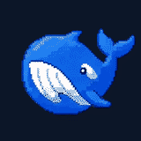
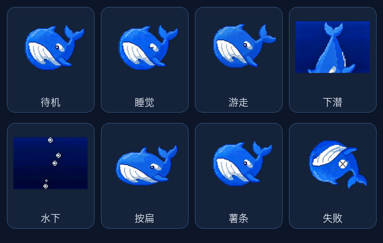
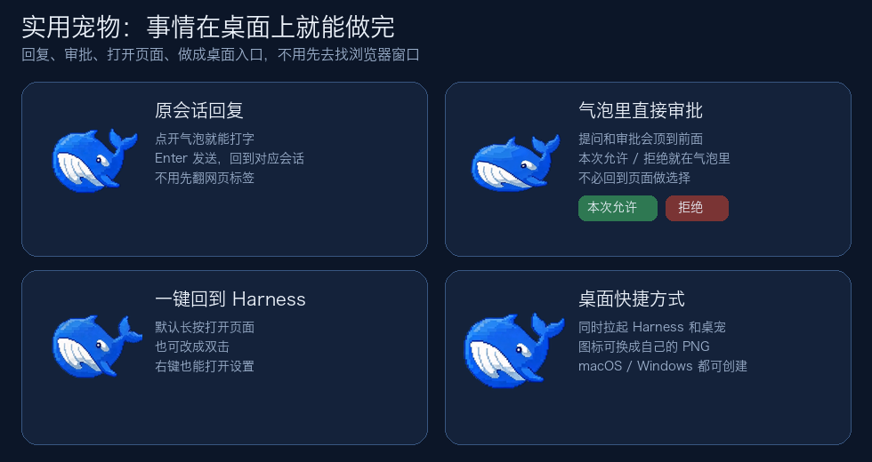
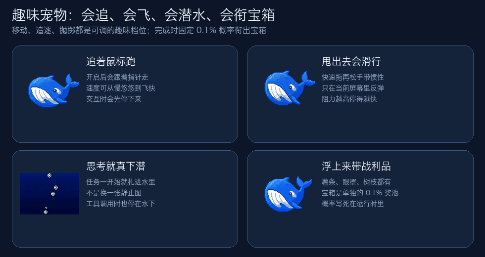
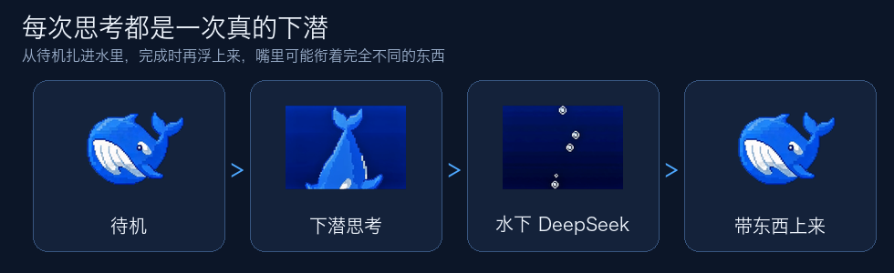
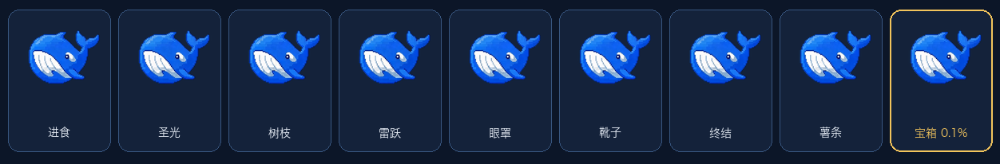
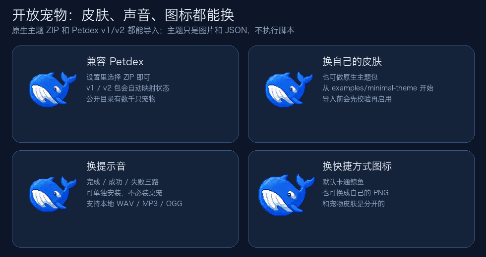

XY DeepSeek Pet
中文 · English
非官方、开源的 DeepSeek Harness 桌面宠物。
它能在桌面上把事情做完，也会追着你玩，还能换成你自己的皮肤。

它是什么
一句话：一只跟着真实 Harness 任务活着的小鲸鱼。
任务一开始，它会扎进水里思考；工具在跑，它就停在水下；问你问题或等你审批时，气泡会顶到前面。你可以直接回原会话、在气泡里点“本次允许 / 拒绝”，或长按回到 Harness 页面。做完之后，它再浮上来，嘴里可能衔着完全不同的东西。
它不是浏览器里的装饰图，也不是只能换皮肤的摆件。竞争力就三件事：
| 它是 | 你得到的 |
|---|---|
| 实用宠物 | 回复、审批、打开页面、做成桌面入口，都不用先去找浏览器窗口 |
| 趣味宠物 | 追鼠标、被甩出去、真下潜，上来还可能衔着薯条或宝箱 |
| 开放宠物 | 换皮肤、换音效、换快捷方式图标，并兼容 Petdex |
桌宠只展示公开助手文字，以及“思考中 / 调用工具 / 等待回答 / 等待审批”。隐藏的 reasoning-delta、完整对话、原始工具参数、审批理由和桥接凭据都不会出桌面桥。
实用宠物
事情在桌面上就能做完。

- 回原会话：最多三个会话气泡。点开就能打字，
Enter发送，Shift+Enter换行。回复会回到对应会话，不用先翻网页标签。 - 在气泡里做选择：提问会明确提示；审批可以直接点“本次允许 / 拒绝”。不必为了一个确认跳回页面。
- 快速回到页面：默认长按打开 Harness，也可改成双击。右键也能打开页面、回复最近会话或进入设置。
- 桌面快捷方式：设置里可创建一个同时拉起 Harness、网页和桌宠的入口。图标可用默认小鲸鱼，也可以换成自己的 PNG。
侧边栏的“打开桌宠 / 关闭桌宠”是真开关。只关桌宠不会停掉 Harness。
趣味宠物
它会玩，而且玩的是真实任务状态，不是循环播放一张待机图。

- 追着鼠标跑：打开后会跟着指针走，速度可调。你去点它、拖它或回消息时，会先停下来。
- 可以被甩出去：快速拖再松手会带着惯性滑出去，只在当前屏幕里反弹。阻力越高，停得越快。
- DeepSeek 时真下潜：任务一开始就扎进水里，不是换一张静止图。工具调用时也停在水下。
- 每次上来带的东西不一样：常规完成会均分薯条、眼罩、树枝、靴子等战利品。宝箱是单独奖池，固定
0.1%，也就是大约一千次完成里会有一次。这个概率写死在运行时里，主题包改不了。


闲着时它会自己游一会儿；十分钟没人理就会打瞌睡。按一下会被按扁再弹回来。大小可在 20% 到 200% 之间调。
开放宠物
默认小鲸鱼只是第一套皮肤。外观、声音、快捷方式图标都是可替换的数据，不是写死在程序里的。

- 兼容 Petdex：设置里选择 ZIP 即可导入 Petdex v1 / v2 宠物包。公开目录收录了数千只宠物；导入时会校验并映射到桌宠状态，不会执行包里的脚本。
- 也能用原生主题：从可直接导入的
examples/minimal-theme开始，按主题制作指南和schemas/theme.schema.json做自己的包。 - 音效可换：可选的
xy-deepseek-sounds管任务完成、工具成功和工具失败。三路可单独开关，也可导入不超过 10 秒的本地 WAV / MP3 / OGG。不装桌宠也能单独用。 - 快捷方式图标可换：宠物皮肤和桌面图标是分开的。换主题不会改快捷方式；快捷方式也可以用自己的 PNG。
主题只含图片和 JSON。不接受脚本、网址或 shell 命令，也不会拦截 Harness 的全局文件拖入。兼容范围见主题兼容说明。
装好之后，Harness agent 也知道这些接口。你可以直接说“帮我换一个本地宠物包”或“把任务完成提示音换成这个文件”。
安装
需要 DeepSeek Harness 0.1.0-rc.6 和 Node.js 22 或更高版本。当前走 Harness 的 web profile。
- 如果
dsh web正在运行，先回到启动它的终端按Ctrl+C，等进程退出。 - 安装插件：
``sh
dsh plugin --profile web add xy-deepseek-pet
``
桌面运行时 xy-deepseek-desktop 会自动跟上。第一次还要下载当前平台的 Electron，大约 120-150 MB；终端可能会一段时间只显示 Downloading Electron binary...。
- 再启动 Harness：
``sh
dsh web
``
侧边栏随后会出现“打开桌宠”。第一次不会自动弹出来，可在通用设置里打开“随 Harness 启动”。不要在旧服务还占着 3080 时再开一份 dsh web。
提示音是可选的：
dsh plugin --profile web add xy-deepseek-sounds
| 安装内容 | 你会得到什么 |
|---|---|
xy-deepseek-pet | Cordis Host 桥、Harness 设置页和 Electron 桌宠 |
xy-deepseek-sounds | 完成 / 工具结果提示音，不安装 Electron |
| 两者都装 | 声音设置收进“桌面宠物”，不会重复听同一批事件 |
如果安装日志里错误地出现 workspace:，先确认装的是 npm registry 版本，而不是仓库目录或旧 tarball：
npm view xy-deepseek-pet@0.1.0 dependencies
dsh plugin --profile web list xy-deepseek-pet xy-deepseek-desktop
registry 上的 xy-deepseek-pet@0.1.0 依赖是普通的 xy-deepseek-desktop: 0.1.0，不用改成 file:。如果日志明确说 pnpm 拦住了 Electron 的安装脚本，到日志里写的 profile 目录运行 pnpm approve-builds，允许 electron 后再装一次。
使用
- 侧边栏开关桌宠；关桌宠不等于关 Harness。
- 单击气泡回复；审批按钮就在气泡里。
- 右键：打开 Harness、回复最近会话、打开设置、重新连接或关掉桌宠。
- 所有偏好都在 通用设置 > 桌面宠物：主题、缩放、游动、追鼠标、抛掷阻力、全屏时是否显示、导入 ZIP、桌面快捷方式。
- 选 ZIP 后会先验证再启用。
平台状态
- macOS：源码构建、npm tarball 干净安装和桌面进程启动已验证。
- Windows：共用同一套 Electron 源码；启动参数、PowerShell 播放和构建路径有自动化测试。0.1.0 还没做完交互式 Windows GUI 全流程验证。
- 0.1.0 未签名、未公证，也没有独立的
.dmg、.msi或.exe。系统若拦截未知应用，请走 npm / Harness 安装，不要绕过来源不明的安全警告。
开发
pnpm install --frozen-lockfile
pnpm build
pnpm test
pnpm verify
pnpm --filter xy-deepseek-desktop start
pnpm --filter xy-deepseek-desktop dev -- --demo-error
pnpm --filter xy-deepseek-desktop dev -- --demo-approval
开源与安全
代码使用 MIT License。默认鲸鱼和内置声音的来源、许可与哈希记在各自的 provenance 文件里。主题和菜单扩展都是数据接口。安全问题请按 SECURITY.md 私下报告。
本项目与 DeepSeek 无隶属、合作或背书关系；DeepSeek 名称及相关标识归其权利人所有。